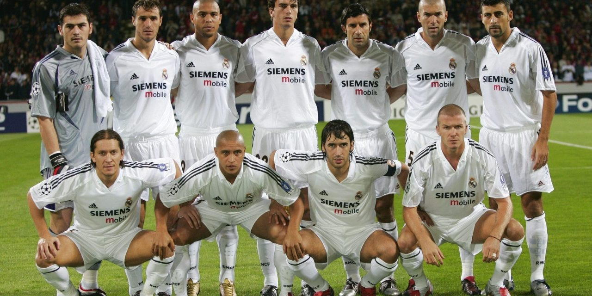

History
Real Madrid Football Club was founed in March 6, 1902. Their all white uniform lead to them being given the infamous nickname "Los Blancos".
Their historic rivals have been FC Barcelona. Their record against Barcelona is 105 wins, 102 losses, and 52 draws. Real Madrid are considered
the greatest football club of all time and their prestigious name attracts big players from all around the world. The current president of
Real Madrid is Florentino Perez. He was elected on July 17, 2000 as he promised to sign one of Barcelona's star players, Luis Figo.
The "Galácticos" are an important part of Real Madrid history in the 21st century. They were a group of players signed by
Florentino Perez between 2000 and 2006. Some of these "Galácticos" included massive football names such as Luis Figo, Zinedine Zidane,
Ronaldo Nazario, and David Beckham. Below is a picture of this legendary Galácticos team.
